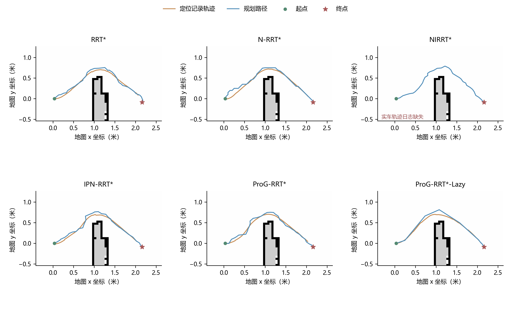
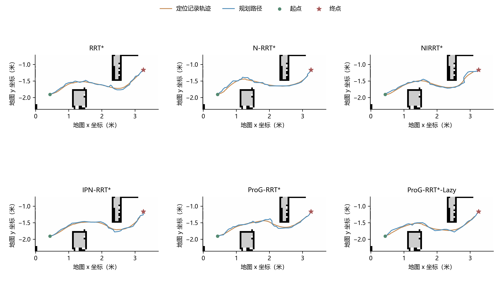

Scene 1
| Method | Path length (m) ↓ | Planning time (s) ↓ | Iterations ↓ |
|---|---|---|---|
| RRT* | 2.8503 | 2.9719 | 2244 |
| N-RRT* | 2.8429 | 5.1966 | 3049 |
| NIRRT* | 2.8512 | 4.4772 | 762 |
| IPN-RRT* | 2.8401 | 2.1941 | 915 |
| ProG-RRT* | 2.8553 | 1.8637 | 484 |
| ProG-RRT*-Lazy | 2.7921 | 1.6289 | 19 |
N-RRT*
NIRRT*
IPN-RRT*
ProG-RRT*
ProG-RRT*-Lazy
Planned paths and recorded trajectories

Blue: planned paths; orange: recorded localization. The NIRRT* trajectory log is unavailable for this scene, so its panel shows the planned path only.
Scene 2
| Method | Path length (m) ↓ | Planning time (s) ↓ | Iterations ↓ |
|---|---|---|---|
| RRT* | 3.3437 | 6.7726 | 3860 |
| N-RRT* | 3.3468 | 15.0233 | 7016 |
| NIRRT* | 3.3381 | 4.1399 | 523 |
| IPN-RRT* | 3.3738 | 16.4884 | 5247 |
| ProG-RRT* | 3.3476 | 7.2445 | 2564 |
| ProG-RRT*-Lazy | 3.2934 | 2.1025 | 3075 |
RRT*
N-RRT*
NIRRT*
IPN-RRT*
ProG-RRT*
ProG-RRT*-Lazy
Planned paths and recorded trajectories

Blue: planned paths; orange: recorded localization.